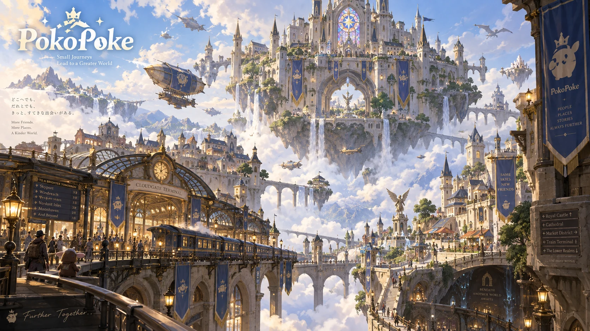
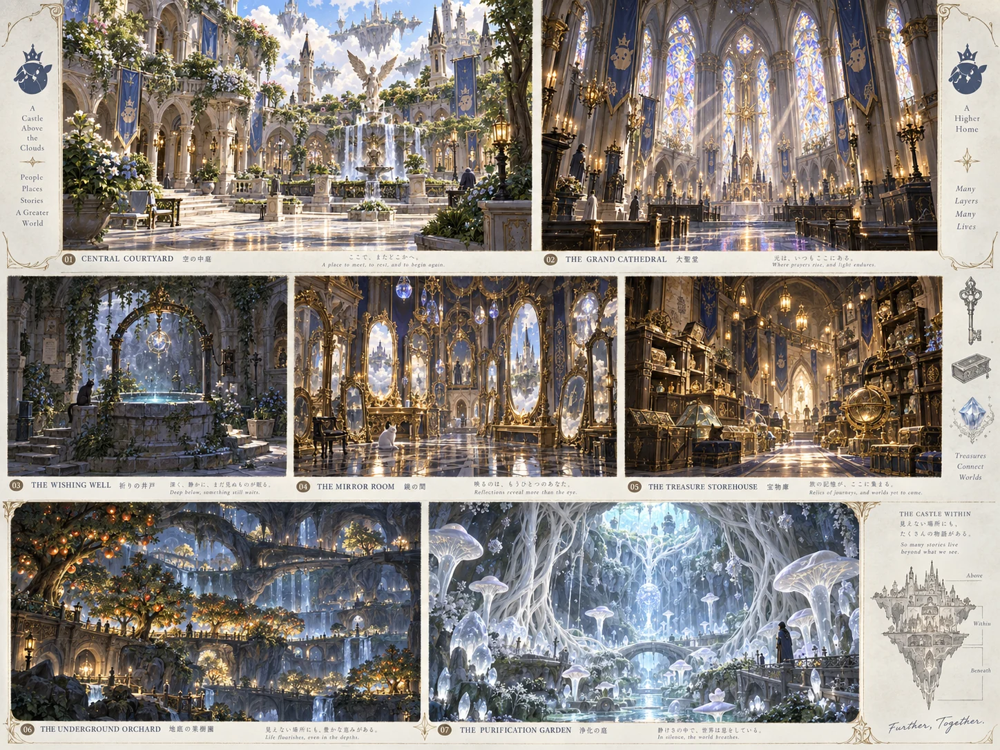

ターミナル駅
到着と出発の起点。駅前から倉庫と城へ迷わず進める構成に。
駅名・路線名・既存路線との接続は未確定です。島全体の交通構想は、ロケット団中央駅の設計書へ。
駅の候補位置を決める →BUILDING NOTE 2026.09.12
島とのつながり空中城・ターミナル拠点 / CONCEPT & PLAY PLAN
駅に着き、倉庫に荷物を置いて、城へ。
空の中庭から、静かな地下の緑まで。
眺めていた景色を、少しずつ暮らせる場所に。

全景を拡大これは完成イメージです。 ゲーム画面や、建築可能性を検証済みの設計図ではありません。画像内の名称・英語コピーは演出で、正式設定として採用していません。
02 / AREA & CIRCULATION
まず通り道を確保し、見せ場はその先に育てていく。
空中城は建築中（本人申告）。駅・倉庫を備えた拠点にする方針と、各施設の構想は決定済みです。各施設の完成度・実際の配置・使用パーツ・所持素材は未確認です。
INSIDE THE CASTLE
中庭、大聖堂、井戸、鏡の部屋、宝物倉庫。そして地下の二つの植物空間。

7つの空間を拡大03 / PLACES TO BUILD
場所と雰囲気は構想、役割の補足と着手順は建築準備の提案です。各カードから対応するチェック項目へ進めます。
到着と出発の起点。駅前から倉庫と城へ迷わず進める構成に。
駅名・路線名・既存路線との接続は未確定です。島全体の交通構想は、ロケット団中央駅の設計書へ。
駅の候補位置を決める →持ち込む実用品を保管する場所。駅からの搬入と、建築に向かう出入りを優先。
城内の宝物倉庫とは分けて計画します。
荷物を置く場所を決める →城の中心になる、ひらけた空間。入口と各部屋をつなぐ道を先に通します。
中庭と主要通路をつなぐ →光を見せ場にする大きな空間。使える窓やパーツを確認して、小さな一面から。
窓まわりを一面試す →城に小さな静けさをつくる場所。中庭や通路との距離を歩いて確かめます。
井戸の位置を仮置きする →映り込みと奥行きを楽しむ部屋。表現に使えるものを、実際のゲームで確認。
使える表現を一つ試す →宝物を眺め、並べるための空間。日常の実用品を置く倉庫とは、役割を分けます。
宝物を置く区画をつくる →地下に緑と実りがある風景。地下での植栽・生育条件は、先に小さく確認します。
地上の実りの構想も眺める：きのみ農園の設計書
地下で植栽を試せるか確認 →ナウシカの地下の部屋を連想させる、静かで神秘的な植物の空間。
浄化機能や発光植物の実装を保証するものではありません。島の地下空間の構想は、ゴロゴロ地下街の設計書へ。
植物と光の小さな一角を試す →04 / NEXT PLAY
施工順は初期提案です。現地で確かめながら、できるところから進めてください。
次回はここから
位置と経路が確認できたら
骨格を使いながら
寸法・所持素材・利用可能なパーツ・ゲーム上の制約は未確認です。このリストは実測後に調整する建築準備案です。
↑ 完成イメージに戻るME-NO-SHIMA / THE WIDER ISLAND
空中城も、メの島で育てる一つの拠点。駅や地下、実りの風景を考えるときは、島の設計書も一緒に眺めてみる。
 MASTER MAP / P-2026-014島の全体図を開く →
MASTER MAP / P-2026-014島の全体図を開く →
一緒に眺めたい設計書
地下の空間を考える / P-2026-006ゴロゴロ地下街 駅の役割を考える / P-2026-007ロケット団中央駅 実りの風景を考える / P-2026-010きのみ農園既存の構想を参照するためのリンクです。空中城の島内位置、既存駅との関係や路線・地下通路の接続は未確定です。
13施設の設計書一覧へ